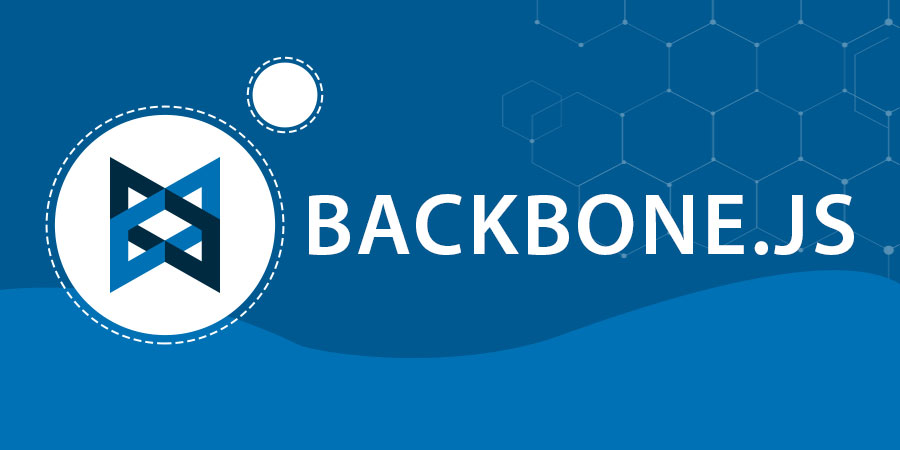

Backbone se trata de un framework muy indicado para desarrollar nuestras propias aplicaciones de una sola página, aunque también resulta útil para proyectos multipágina en donde necesitaremos una interfaz de usuario más avanzada. Entre sus ventajas, facilita la ordenación del código y la sincronización de las vistas con los datos de la aplicación, facilitar el trabajo con datos, vistas para producir nuestro HTML, las interacciones para implementar comportamientos que debe realizar frente a acciones del usuario y los servicios para comunicar con cualquier tecnología que usemos del lado del servidor, ya sea NodeJS, PHP, Ruby, .NET, etc.

Backbone.js implementa cuatro clases:
- Model: se utiliza para representar los datos de su aplicación. Por ejemplo, un modelo de empleado.
- Collection: se utiliza para mantener una lista de los objetos de su modelo. Por ejemplo, una colección de empleados que contiene una lista del modelo de empleado.
- View: cada modelo y colección se puede asociar con una vista Backbone. También puede crear una vista para un elemento DOM existente para que la vista pueda responder a eventos generados a partir de ese elemento DOM.
- Controller o Router: Como routes.rb en Rails y acciones de controlador. Mapea URLs con funciones.
Resumen de características:
- Componentes centrales: Modelo, Vista, Colección y Controlador.
- Comunicación dirigida por eventos entre la capa Vista y Modelo. Ofrece a los desarrolladores un control detallado sobre los cambios que se produzcan en la Vista.
- Admite enlaces de datos a través de eventos manuales o una mediante el uso de una biblioteca separada para la observación de valores clave (KVO).
- Compatibilidad con interfaces RESTful listas para usar, por lo que los modelos se pueden vincular fácilmente a un back-end.
- Los prototipos se instancian con el uso de una palabra clave.
- La microplantilla Underscore se encuentra disponible por defecto.
- Convenciones claras y flexibles para estructurar aplicaciones. Backbone no fuerza el uso de todos sus componentes y podemos trabajar sólo con aquellos que sean necesarios.